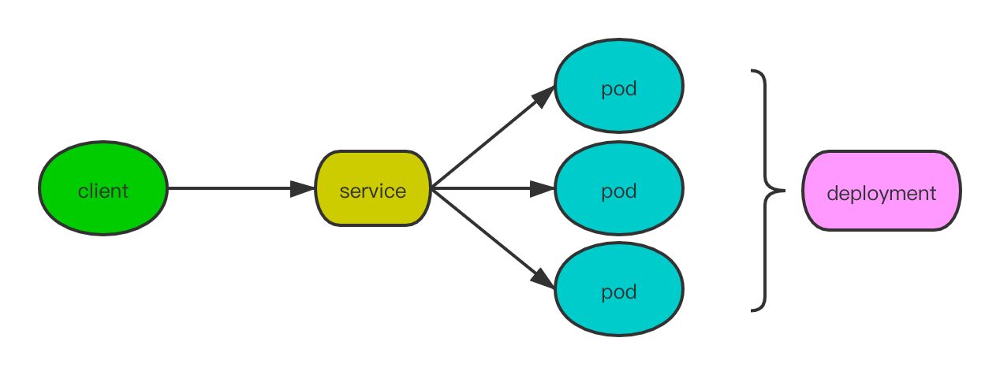

一个例子理解Docker和Kubernetes

docker和k8s早已成为云原生架构的事实标准，在运维、调度、机器学习炼丹等场景均有大范围应用。当下这么大红大紫的技术不了解点皮毛确实说不过去，但对平时只做后台或算法的同学来说其门槛相对还是较高。这里从一个简单的例子，抛开底层技术原理，尽量减少专业术语，以通俗易懂的方式介绍下它们如何能帮助开发和算法工程师更好地玩耍。
没有docker之前是怎么做的
这里我们以flask构建一个短小精悍的web服务作为例子。先安装flask库，这是唯一的依赖：
pip3 install flask
web.py保存以下内容：
from flask import Flask
app = Flask(__name__)
@app.route('/')
def hello_world():
return 'Hello, World!'
if __name__ == '__main__':
app.run(host="0.0.0.0")
大功告成！接下来我们运行这个脚本，测试一下服务是否正常工作：
➜ ~ python3 web.py
➜ ~ curl 127.0.0.1:5000
Hello, World!
引入docker解决了哪些问题
上面的例子中，从准备到成功运行起来大概做这些事情，
- 1.安装环境和程序依赖，比如运行时，各种库等；
- 2.代码编写及调试。 似乎看起来一切正常，但想象一下，当我们完美调试好准备上线或要给其他人看看效果时，至少前两个步骤还得重复一遍。现在只是装个Python环境，pip一下也不太麻烦，对于一些要涉及OS相关或者要编译的(比如C++程序)，这个过程就会让人失去耐心，而本来我们已经采过坑，不应该再来一遍啊。于是，docker的一大贡献就解决了这个难题：环境依赖。来看看具体过程
准备基础镜像
基础镜像主要提供程序运行时环境，如Python，JDK等，我们的应用需要Python3环境：
docker pull python:3.7-stretch
安装各种库依赖
先运行并进入一个容器
docker run -p 5000:5000 -it --name=flask-demo python:3.7-stretch bash
安装程序所需的环境，各种库啥的，这里我们只需flask。
准备我们的代码，可以直接vim web.py保存，也可从网络下载或使用 docker cp web.py flask-demo:web.py拷贝进容器
另开一个终端，保存我们处理好的“环境”
docker commit -m '我的Flask镜像' flask-demo flask-py3
其中flask-demo即刚刚我们安装环境的容器名称，flask-py3是我们新的镜像名
至此我们已经做好了包含程序代码和程序运行所需环境的“集装箱”,该“集装箱”可以很方便进行网络运输，并在任何装有docker引擎的机器上无差别使用，完美诠释了“Build once, Run anywhere”的理念。
简单起见，这里暂不引入“仓库”的概念，仅在本机示例整个流程。启动服务也仅需一条命令：
docker run -d -p 5000:5000 flask-py3 python3 web.py
我们就完成了上述web服务的部署过程，使用curl测试也能达到同样的效果。 单纯通过上面的例子可能还难以说明docker的颠覆性优势，再试想下这些场景：如果希望提高资源利用率需要在一台机器上运行多个进程，这些进程的资源不应该相互影响呢？各个进程依赖的环境版本不一样时冲突怎么解决？这是docker另一大优势：资源隔离。当然，虚拟机(VM)也能实现，但相比之下，容器技术轻量级、资源占用少、启动快的优势是VM无法比拟的。
k8s又是什么玩意
docker已经解决了交付的问题，可以一顿骚操作后生产环境就跑起来。然而，作为一个合格的后台，不难发现存在安全隐患：单点服务，进程挂了或机器坏了怎么办？用户并发请求多了处理不过来怎么办？这不就是分布式系统要解决的问题吗？是的没错，依然可以用熟悉的技术栈来对付，如zookeeper，nginx等。在云原生领域，多了一种更推荐的方案，就是k8s。 官方的话来说，Kubernetes是一个开源的容器编排引擎，用来对容器化应用进行自动部署、 扩缩和管理，通俗讲就是解决容器需要多少个副本，占多少资源，失败了自动重启，还能自动扩缩容等等问题的技术。
POD
POD是k8s的资源对象，为其最小的调度单元。POD由一个或一组容器组成，容器之间共享同一个卷、同一个IP、端口空间、IPC命名空间。通常一个POD只运行一个容器，此处可简单理解为POD就是前面提到的容器。如下yaml文件定义一个POD：
apiVersion: v1
kind: Pod
metadata:
name: flask-helloworld
labels:
app: flask-helloworld
spec:
containers:
- image: flask-py3:latest
imagePullPolicy: IfNotPresent
command: ["python3"]
args: ["web.py"]
name: flask-helloworld
ports:
- containerPort: 5000
定义好POD描述后执行以下命令生成POD资源
kubectl apply -f flask-helloworld-pod.yaml
看看POD是否正常运行
~ kubectl get pod
NAME READY STATUS RESTARTS AGE
flask-helloworld 1/1 Running 0 7h25m
通过端口转发即可实现从外部访问POD
kubectl port-forward flask-helloworld 5000:5000
这时的请求路径和普通的单体应用没啥区别：
Service
除了端口转发，外部访问POD更推荐的方式是使用Service资源。
apiVersion: v1
kind: Service
metadata:
name: flask-helloworld-lb
spec:
type: LoadBalancer
ports:
- port: 5000
protocol: TCP
targetPort: 5000
selector:
app: flask-helloworld
这个Service是LoadBalancer类型，与Nginx类似，它可以将前端的请求转发到后端的POD处理。不同的是，Nginx通过配置转发location规则来匹配后端服务，Service根据selector属性来匹配的。上面的Service指定了POD中含有app: flask-helloworld键值对标签(即labels属性)为转发目标。创建成功后我们可以验证一下：
~ kubectl apply -f flask-helloworld-svc.yaml
service/flask-helloworld-lb configured
~ kubectl get svc
NAME TYPE CLUSTER-IP EXTERNAL-IP PORT(S) AGE
flask-helloworld-lb LoadBalancer 10.100.248.121 localhost 5000:32557/TCP 36s
~ curl 127.0.0.1:5000
Hello, World!
Deployment
上面我们只运行了一个POD，本质上和前面的docker并无区别，版本更新、扩缩容、高可用等问题并没解决。k8s的Deployment资源正是针对此问题而生。下面是Deployment的一个典型配置
apiVersion: apps/v1
kind: Deployment
metadata:
name: flask-helloworld
spec:
replicas: 2
selector:
matchLabels:
app: flask-helloworld
minReadySeconds: 15
strategy:
type: RollingUpdate
rollingUpdate:
maxUnavailable: 1
maxSurge: 1
template:
metadata:
labels:
app: flask-helloworld
spec:
containers:
- image: flask-py3:latest
imagePullPolicy: IfNotPresent
command: ["python3"]
args: ["web.py"]
name: flask-helloworld
ports:
- containerPort: 5000
- replicas 期望运行的POD副本数量，当实际运行的POD不等于这个值时，k8s自动调整(即增删)到该数值
- strategy 更新POD的策略，如
maxUnavailable表示更新时最大有maxUnavailable个POD同时停止；maxSurge表示更新过程最多可能有maxSurge + replicas个POD - template 可以发现这个配置和POD的定义很像，该字段即为Deployment在创建新Pod时指定POD的模板
这里需要注意
spec.selector.matchLables属性和template.metadata.labels属性不能忽略且应保持一致。 生成并验证
~ kubectl apply -f flask-helloworld-deployment.yaml
deployment.apps/flask-helloworld created
~ kubectl get deployment
NAME READY UP-TO-DATE AVAILABLE AGE
flask-helloworld 2/2 2 2 37s
~ kubectl get pod
NAME READY STATUS RESTARTS AGE
flask-helloworld-86955d6f4d-222ls 1/1 Running 0 47s
flask-helloworld-86955d6f4d-qwnd4 1/1 Running 0 47s
可以看到期望的2个POD副本已经在运行，且测试的请求都能转发都每个POD处理，满足了负载均衡的要求！
接下来，假设我们的服务上线了，用户访问大增需要扩容，想想以前是怎么做的。再看看k8s的方式：只需要修改replicas的值，如将2改为5，重新apply后看看效果
~ kubectl get pod
NAME READY STATUS RESTARTS AGE
flask-helloworld-86955d6f4d-222ls 1/1 Running 0 44m
flask-helloworld-86955d6f4d-g4zbv 1/1 Running 0 5m24s
flask-helloworld-86955d6f4d-jdgr8 1/1 Running 0 5m24s
flask-helloworld-86955d6f4d-qwnd4 1/1 Running 0 44m
flask-helloworld-86955d6f4d-tf94g 1/1 Running 0 5m24s
上线一段时间后用户访问减少，同样仅需修改replicas的值，如将5改为3，再看看效果
flask-helloworld-86955d6f4d-222ls 1/1 Running 0 48m
flask-helloworld-86955d6f4d-g4zbv 1/1 Terminating 0 9m16s
flask-helloworld-86955d6f4d-jdgr8 1/1 Terminating 0 9m16s
flask-helloworld-86955d6f4d-qwnd4 1/1 Running 0 48m
flask-helloworld-86955d6f4d-tf94g 1/1 Running 0 9m16s
有两个POD正在停止，简单快捷地完成了滚动更新且不停机！ 目前的架构变成了这样：  实际上，k8s还有更高级的功能HPA，可以根据资源利用率自动完成上述扩缩容，并不需要人工修改replicas的值，这里不再展开。